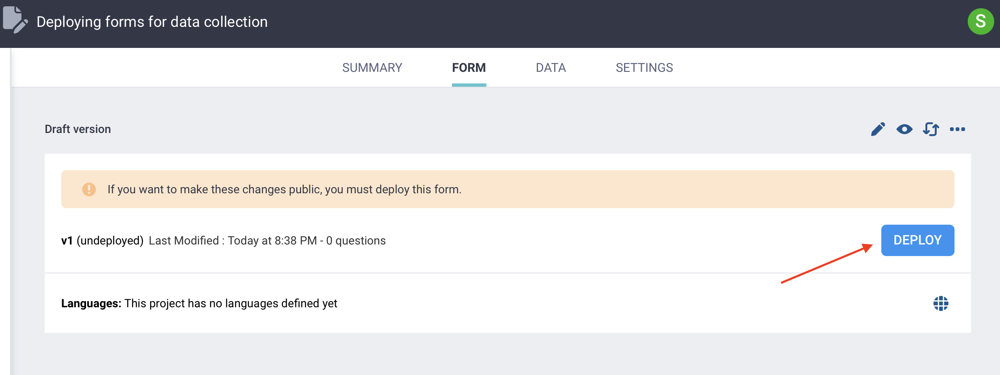
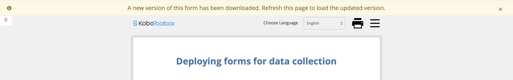
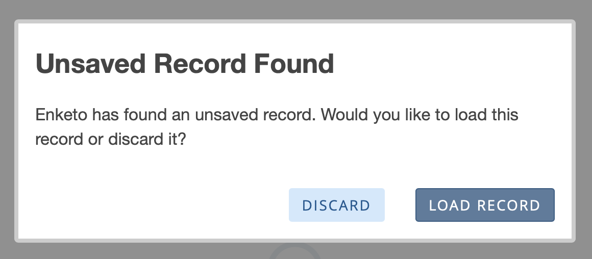

Busca en nuestra documentación, explora nuestros recursos y visita nuestro Foro de la Comunidad para obtener información más detallada
Última actualización: 23 abr 2026
Antes de poder recolectar datos en KoboToolbox, tu formulario debe estar implementado. La implementación hace que el formulario esté activo y disponible para envíos. Puedes volver a implementar un formulario cada vez que hagas cambios y desees que esos cambios entren en vigencia.
Este artículo explica cómo implementar y volver a implementar formularios en KoboToolbox, cómo las actualizaciones afectan los formularios web y KoboCollect, qué verificar antes de activar un formulario y qué cambios evitar una vez que la recolección de datos haya comenzado.
Para obtener más información sobre la recolección de datos con KoboToolbox, consulta Recolección de datos con KoboToolbox.
Cuando tu formulario esté listo para recibir datos, abre el proyecto y haz clic en IMPLEMENTAR en la página FORMULARIO para activarlo.

Una vez que hayas implementado un formulario, puedes comenzar a recolectar datos con él.
Después de que un formulario ya ha sido implementado, se te pedirá VOLVER A IMPLEMENTAR cada vez que hagas cambios que aún no sean públicos. Aparecerá un banner amarillo que dice «Si deseas publicar estos cambios, debes implementar este formulario».
Nota: Siempre vuelve a implementar los formularios después de realizar cambios en los archivos multimedia del formulario, las traducciones o los títulos del formulario, incluso si KoboToolbox no te solicita volver a implementar.
Después de volver a implementar un formulario, los usuarios deberán actualizar o descargar la versión actualizada para ver los cambios.
Cuando uses formularios web, las actualizaciones pueden tardar unos segundos en aparecer. Una vez que la nueva versión esté lista, aparecerá un banner amarillo en la parte superior del formulario que dice: «Se ha descargado una nueva versión de este formulario. Actualiza esta página para cargar la versión actualizada». Actualiza la página para cargar la última versión.

Si alguien ya ha comenzado a ingresar datos, aún puede actualizar. KoboToolbox le pedirá que descarte los datos ya ingresados o que los cargue en la nueva versión del formulario.

Cuando uses KoboCollect, los usuarios deben descargar la última versión del formulario para recibir actualizaciones. Esto requiere una conexión a Internet.
La recuperación de la última versión de un formulario se puede hacer manualmente cada vez que el formulario cambie, o se puede configurar para que suceda automáticamente con una frecuencia establecida a través de la configuración de actualización de formularios en KoboCollect.
Nota: Después de volver a implementar un formulario, asegúrate de que todos los recolectores de datos actualicen a la última versión. De lo contrario, algunos usuarios pueden continuar enviando datos con una versión desactualizada, lo que puede generar errores o inconsistencias en los datos recolectados.
Se recomiendan los siguientes pasos antes de iniciar la recolección de datos:
Prueba la vista previa del formulario antes de la implementación. Solo implementa un nuevo formulario, o vuelve a implementar cambios en un formulario existente, después de probarlo exhaustivamente en la vista previa del formulario. Esto ayuda a evitar que los formularios defectuosos se activen.
Prueba el formulario implementado activo. Después de la implementación, abre el formulario y envía datos de prueba para confirmar que los envíos funcionan correctamente y que los datos aparecen en la tabla de datos según lo previsto.
Si es relevante, prueba el formulario en KoboCollect. Siempre prueba los mismos métodos de recolección de datos que se utilizarán para la recolección de datos real, ya sean formularios web, KoboCollect o ambos. Esto es especialmente importante para KoboCollect, ya que no se puede probar completamente hasta que el formulario haya sido implementado.
Comparte tu formulario usando el modo Solo lectura para pruebas externas. Una vez que se haya implementado un formulario, también puedes compartirlo con otros para realizar pruebas utilizando el modo de formulario web Solo lectura.
Una vez que hayas probado exhaustivamente tu formulario, puedes comenzar la recolección de datos. Probar exhaustivamente antes del lanzamiento ayuda a reducir la necesidad de realizar cambios después de que la recolección de datos haya comenzado.
Si realizas cambios en un formulario después de que la recolección de datos ya haya comenzado, esos cambios pueden afectar tanto tu estructura de datos como tu capacidad para revisar o editar envíos anteriores. Debido a esto, es mejor evitar cambios estructurales importantes una vez que la recolección de datos en vivo esté en curso, a menos que sean absolutamente necesarios.
Los cambios que pueden afectar tu estructura de datos incluyen:
Cambiar el nombre de columna de datos de una pregunta: KoboToolbox lo tratará como una nueva variable y creará una nueva columna en la tabla de datos.
Cambiar un tipo de pregunta manteniendo el mismo nombre de columna de datos: Esto puede crear datos inconsistentes en la misma columna y generar errores (por ejemplo, en la vista DATOS > Informes).
Mover preguntas dentro o fuera de grupos: KoboToolbox tratará estas preguntas como nuevas variables y creará nuevas columnas en la tabla de datos.
Eliminar opciones de una lista de opciones: Los envíos anteriores aún pueden contener esos valores de opción, pero es posible que ya no tengan una etiqueta asociada en el formulario.
Agregar nuevas opciones a una pregunta Seleccionar una o Seleccionar varias: Asegúrate de que cada nueva opción tenga un valor XML único dentro de una lista de opciones determinada.
Eliminar una pregunta que se usa en otra parte del formulario: Si la pregunta se hace referencia en un cálculo, condición de relevancia, restricción u otra expresión, también deberás actualizar esas referencias.
Cambiar etiquetas de preguntas u opciones: No afecta la estructura de datos si el nombre de columna de datos o el valor XML permanece igual, pero los datos recolectados previamente usarán la etiqueta actualizada.
Cambiar el significado de los valores de opción existentes: Cambiar los nombres o etiquetas de las opciones puede hacer que los datos sean inconsistentes en las versiones del formulario y generar una mala interpretación. Por ejemplo, esto puede suceder si inviertes el significado de valores como 1 = Sí y 0 = No, o cambias la dirección de una escala Likert.
Nota: Si tu formulario usa varios idiomas, recuerda también actualizar las traducciones cada vez que cambies el formulario. Esto es fácil de pasar por alto después de la reimplementación.
Los cambios en un formulario también pueden afectar cómo se comportan los envíos anteriores cuando los editas, porque un envío creado con una versión anterior del formulario puede que ya no coincida con la versión actual. Por ejemplo:
Agregar nuevas preguntas obligatorias: Los envíos anteriores pueden requerir nuevas respuestas antes de que puedan enviarse nuevamente.
Eliminar preguntas o agregar lógica de omisión: Los envíos anteriores pueden perder datos recolectados previamente en esas preguntas cuando se editan.
Agregar nuevas reglas de validación o restricciones: Las respuestas anteriores pueden que ya no cumplan con las reglas actualizadas y es posible que no se envíen nuevamente.
choices para encontrar el valor duplicado más fácilmente. El mensaje de error generalmente proporcionará el número de fila en la hoja choices que está causando el error.
pulldata(), pero ese archivo no se ha cargado al proyecto.
¿Encontraste lo que buscabas? ¿Te ha parecido clara la traducción? ¿Faltaba algo?
¡Comparte tus comentarios para ayudarnos a mejorar este artículo!
KoboToolbox es mantenido por Kobo Inc.